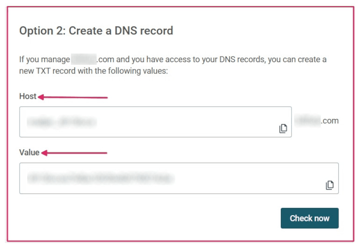

API de Mailjet¶
Odoo es compatible con la API de Mailjet para realizar envíos masivos de correos. Configure un servidor específico para correos masivos con Mailjet al configurar los ajustes de la cuenta de Mailjet y de su base de datos de Odoo. En algunos casos, también deberá configurar los ajustes en el DNS del dominio personalizado.
Configuración en Mailjet¶
Crear credenciales API¶
Para empezar, inicie sesión en la página de información de cuenta de Mailjet. A continuación, vaya a la sección de Remitentes y dominios y haga clic en los Ajustes de API de SMTP y ENVIAR.

Copie los ajustes de configuración del SMTP en un bloc de notas. Están disponibles en la sección de Configuración (solo SMTP). Los ajustes de configuración del SMTP incluyen la dirección del servidor, la opción de seguridad necesaria (utilice SSL/TLS) y el número de puerto. Los ajustes son necesarios para configurar Mailjet en Odoo, tal como se explica en la última sección.
Importante
Odoo bloquea el puerto 25 en las bases de datos de Odoo en línea y Odoo.sh. Consulte la siguiente referencia.

A continuación, haga clic en el botón de Obtener sus credenciales API para obtener sus credenciales API de Mailjet.
Posteriormente, haga clic en el icono de ojo para revelar la clave API. Copie esta clave en un bloc de notas, ya que es el nombre de usuario en la configuración de Odoo. A continuación, haga clic en el botón de Generar clave secreta para generar la clave secreta. Copie esta clave en un bloc de notas, ya que es la Contraseña en la configuración de Odoo.
Agregar direcciones de remitente verificadas¶
El siguiente paso es agregar una dirección de remitente o un dominio a los ajustes de la cuenta de Mailjet para que la dirección de correo electrónico o el dominio tenga la aprobación para enviar correos electrónicos a través de los servidores de Mailjet. Primero, vaya a la página de información de cuenta de Mailjet. A continuación, haga clic en el enlace de Agregar un dominio o dirección de remitente en la sección de Remitentes y dominios.

Determine si debe agregar la dirección de correo electrónico de remitente o el dominio entero a los ajustes de Mailjet. Es más fácil configurar el dominio entero si el acceso DNS está disponible. Vaya a la sección Agregar un dominio para consultar los pasos correspondientes.
Nota
Todas las direcciones de correo electrónico de los usuarios de la base de datos de Odoo que envían correos electrónicos mediante los servidores de Mailjet se deben configurar o los dominios de las direcciones de correo electrónico de los usuarios se pueden configurar.
De forma predeterminada, la dirección de correo electrónico que se configuró originalmente en la cuenta de Mailjet se agrega como remitente de confianza. Para agregar otra dirección de correo electrónico, haga clic en el botón de Agregar una dirección de remitente. Posteriormente, agregue la dirección de correo electrónico que se configuró para enviar desde el dominio personalizado.
Como mínimo, las siguientes direcciones de correo electrónico se deben configurar en el proveedor y verificar en Mailjet:
notifications@sudominio.com
bounce@sudominio.com
catchall@sudominio.com
Nota
Remplace sudominio con el dominio personalizado de su base de datos. Si no tiene uno, utilice el parámetro de sistema mail.catchall.domain.
Después, complete el formulario de información de correo electrónico, asegúrese de seleccionar el tipo de correo electrónico adecuado: correos electrónicos transaccionales o correos electrónicos masivos. Después de completar el formulario, se envía un correo electrónico de confirmación a la dirección y se puede activar el remitente.
Le recomendamos configurar los ajustes SPF, DKIM y DMARC en el dominio del remitente.
Importante
Si la base de datos no utiliza un dominio personalizado, para verificar la dirección de remitente, se debe configurar un seudónimo temporal (de las tres direcciones de correo electrónico que se mencionaron anteriormente) para crear un lead en la aplicación CRM de Odoo. Posteriormente, la base de datos puede recibir el correo electrónico de verificación y verificar las cuentas.
Agregar un dominio¶
Al agregar un dominio entero a la cuenta de Mailjet, todas las direcciones de remitente relacionadas con ese dominio automáticamente se validan para enviar correos electrónicos mediante los servidores de Mailjet. Primero, vaya a la página de información de cuenta de Mailjet. Posteriormente, haga clic en el enlace de Agregar un dominio o dirección de remitente en la sección de Remitentes y dominios. Después, haga clic en Agregar dominio para agregar su dominio personalizado.
Nota
La cuenta de Mailjet necesita del dominio para luego validarlo a través del DNS.
Posteriormente, complete la página de Agregar un nuevo dominio en Mailjet y haga clic en Continuar.
Después de agregar el dominio, se completará una página de validación. Elija la Opción 2: Crear un registro DNS, si la base de datos de Odoo cuenta con alojamiento local elija la Opción 1. Copie la información de registro TXT en un bloc de notas y vaya al proveedor del DNS del dominio para completar la validación.
Configuración en el DNS del dominio¶
Después de obtener la información de registro TXT de la cuenta de Mailjet, agregue un registro TXT al DNS del dominio. Este proceso varía según el proveedor de DNS. Consulte al proveedor para obtener detalles acerca de los procesos de configuración específicos. La información de registro TXT consiste en el alojamiento y el valor. Péguelos en los campos correspondientes del registro TXT.
Regresar a la información de cuenta de Mailjet¶
Regrese a la cuenta de Mailjet después de agregar el registro TXT al DNS del dominio. Después, vaya a , haga clic en el icono de engranaje que se encuentra junto a Dominio y seleccione Validar.
Esta acción también se puede realizar al ir a la página de Dominios y direcciones de remitentes en la información de cuenta de Mailjet y hacer clic en Gestionar.
A continuación, haga clic en Revisar ahora para validar el registro TXT que se agregó al dominio. Aparecerá una pantalla de éxito si el dominio se configuró correctamente.

La opción Autenticar este dominio (SPF/DKIM) aparece después de configurar el dominio de forma adecuada. Este botón completa los registros SPF y DKIM para ingresarlos en el proveedor de DNS.

Configuración en Odoo¶
Para completar la configuración, vaya a la base de datos de Odoo y luego a los Ajustes. Active el modo de desarrollador, vaya a . Posteriormente, cree una nueva configuración de servidor saliente al hacer clic en el botón de Crear.
Agregue el servidor SMTP (in-v3.mailjet.com), el número de puerto (587 o 465) y la seguridad (SSL/TLS) que copió con anterioridad de su cuenta de Mailjet, también puede encontrar esa información aquí. Le recomendamos que haga uso de SSL/TLS aunque no sean necesarios para utilizar Mailjet.
Para el nombre de usuario, introduzca la CLAVE API. Para la Contraseña, introduzca la CLAVE SECRETA que copió de la cuenta de Mailjet en un bloc de notas. Puede encontrar estos ajuestes en .
Posteriormente, si utiliza el servidor de Mailjet para el envío masivo de correos, establezca el valor Prioridad que sea mayor al del servidor o servidores de correos electrónicos transaccionales. Por último, guarde los ajustes y pruebe la conexión.

Importante
Para que la función de notificaciones funcione con Mailjet, debe establecer tres ajustes en Odoo.
Debe establecer el filtro De en la configuración del servidor. Se recomienda establecerlo como un dominio y no como una dirección de correo electrónico completa. Debe coincidir con el dominio en los dos siguientes pasos. Puede consultar más información aquí.
El parámetro de sistema mail.default.from debe tener el valor
notifications@sudominio.com.El parámetro de sistema mail.default.from_filter debe tener el valor
yourdomain.com. Reemplaceyourdomain.comcon el dominio personalizado de su base de datos. Si no tiene uno, utilice el parámetro de sistema mail.catchall.domain.
Puede obtener más información en Usar una dirección de correo electrónico predeterminada.
Puede acceder a los parámetros del sistema al activar el modo de desarrollador.
Una vez que la configuración esté completa, la base de datos de Odoo está lista para utilizar el servidor de correo electrónico de Mailjet para correos masivos o correos electrónicos transaccionales.